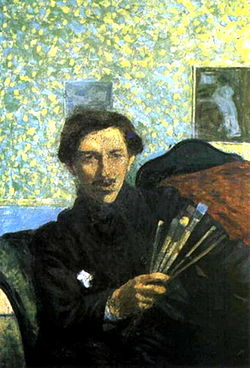
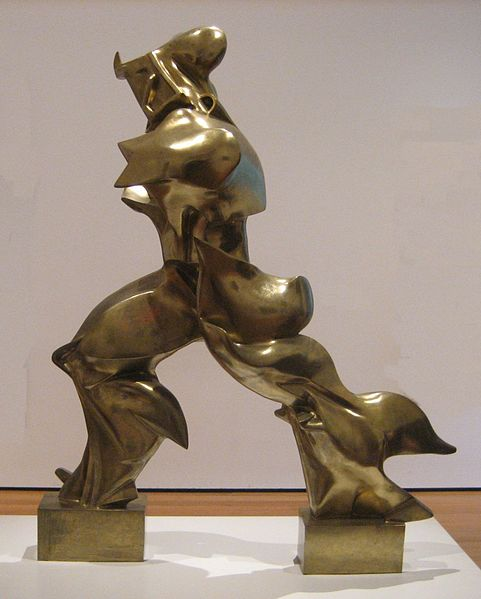
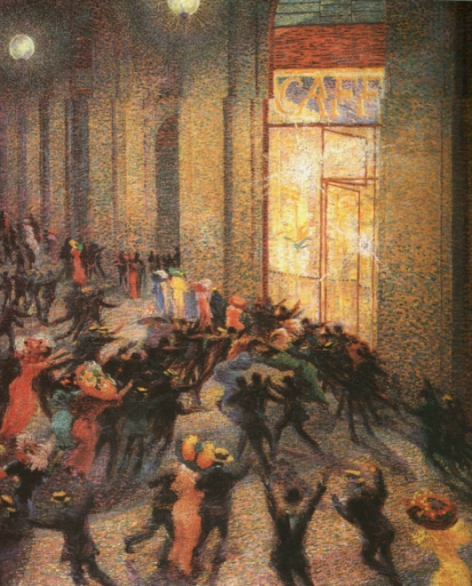

UMBERTO BOCCIONI

Fu un importante scultore e pittore, nato a Reggio di Calabria nel 1882. Suo padre lavorava come usciere di Prefettura e doveva spostarsi qua e là per l'Italia. Dopo vari trasferimenti, Boccioni e suo padre giunsero a Catania, dove si diplomò all'istituto tecnico. Successivamente si trasferì a Roma dove fece il suo primo approccio con la pittura. In questo periodo conobbe Gino Severini e Giacomo Balla nella Scuola libera del Nudo. Con l'aiuto dei genitori, andò all'estero: la prima tappa fu Parigi, la seconda la Russia. Al ritorno dipinse molto e cominciò anche a scolpire piccole statue. In seguito andò a Milano dove fondò, insieme a Carlo Carrà, Severini e Balla, il Manifesto dei pittori futuristi: nacque, così, un nuovo stile pittorico, il futurismo, che si libera dai vecchi modelli di pittura per volgersi al mondo contemporaneo, molto attivo. Nelle sue opere Boccioni rappresentò il dinamismo delle forme. Raffigurò lo stesso concetto anche nelle sue sculture di vetro, legno e ferro, come “Forme uniche della continuità nello spazio”, raffigurata nella moneta Euro da 20 cent italiana. Tra le sue opere più famose vi sono “Stati d'animo n.1: gli addii” dove i sentimenti sono espressi con vortici di colori, “Forze di una strada” e “Rissa in galleria”. Boccioni si arruolò come soldato nella prima guerra mondiale. Famosa diventò la sua frase “Guerra=insetti+noia”. Morì a Verona nel 1916, in seguito a una caduta dalla sua cavalla.
|  |
 |
| Forme Uniche della Continuità nello Spazio |
Rissa in Galleria |
Home Territorio Popolazione Attività economiche Specialità Storia Curiosità